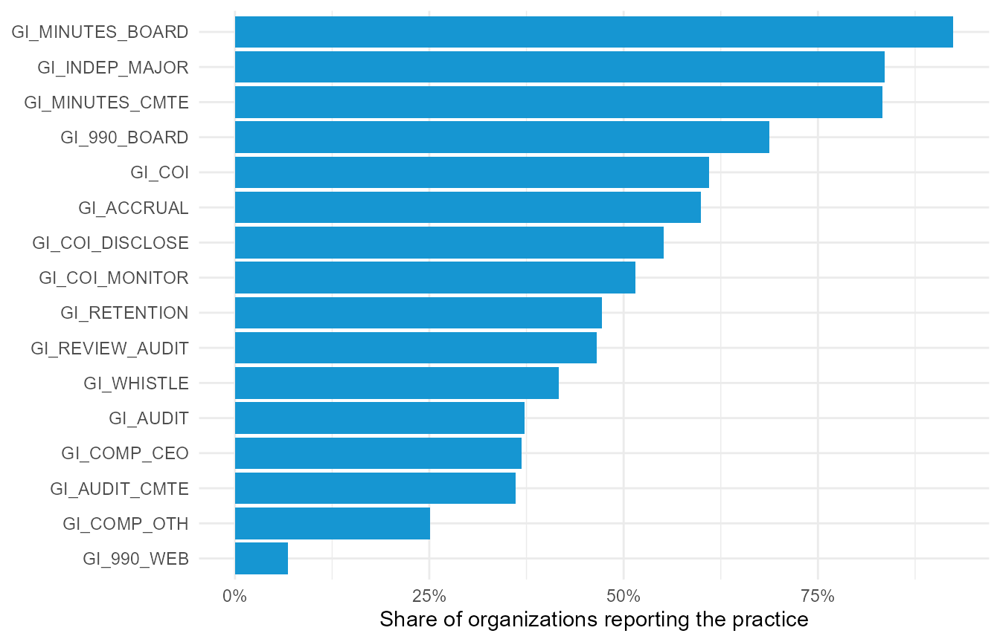
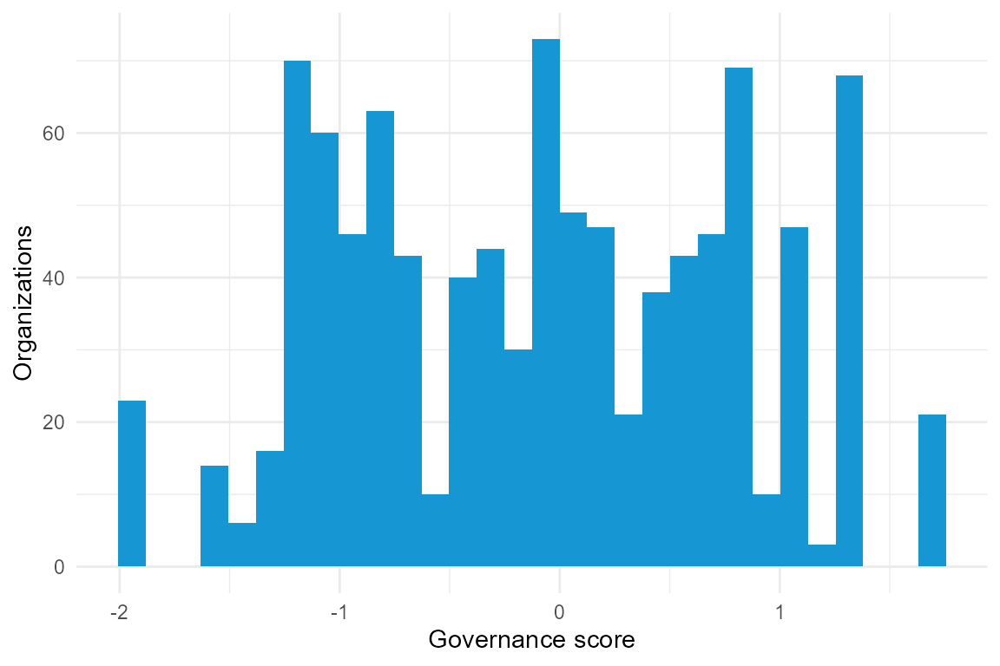
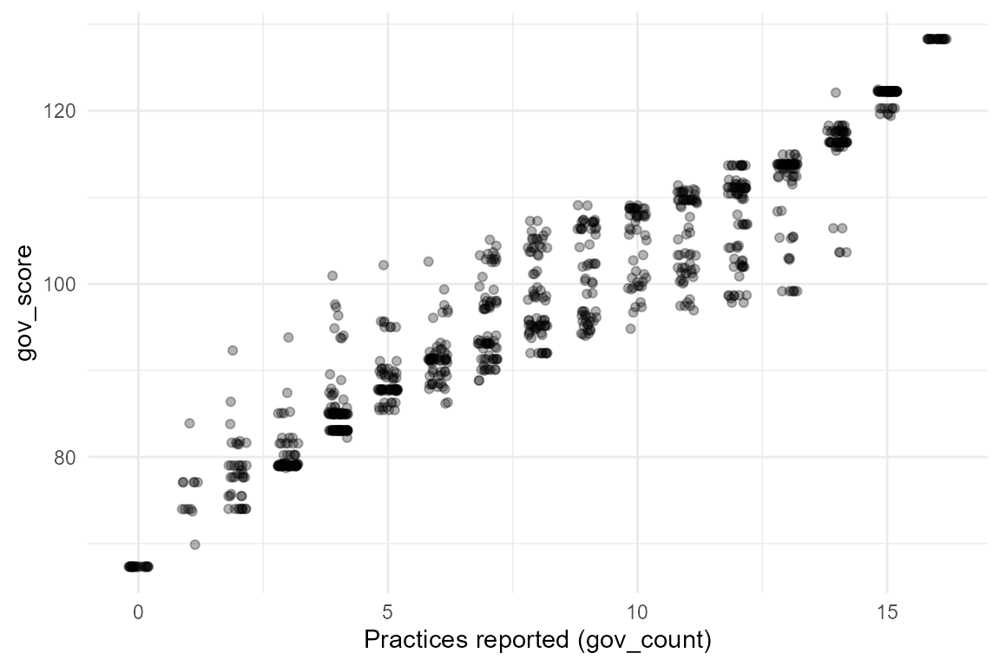

library( governance )
library( dplyr )
library( ggplot2 )
theme_set( theme_minimal() )This article walks through the path from raw 990 fields to governance
scores and explains each column the package adds. It uses the bundled
dat_example, a 5,000-organization sample of raw 2022
fields. In practice the data come from
get_governance_data(); see
vignette("download-data").
data( "dat_example", package = "governance" )
set.seed( 57 )
rows <- sample( nrow(dat_example), 1000 )
dat_example <- dat_example[ rows, ]Step 1: Code the practice items
get_features() returns the input with three groups of
columns appended.
| Columns | What they are | Used by |
|---|---|---|
16 GI_* items |
Recommended practices, 1 = present | the 2023 index (default) |
5 RISK_* indicators |
Reported risk events or exposures, 1 = reported | not scored; reported alongside |
12 P*_LINE_* features |
Features of the 2018 model | get_scores( model = "legacy-2018" ) |
features <- get_features( dat_example )Practice items
Each GI_* item records one practice. A blank answer is
NA, not 0, and the scoring model uses whichever items an
organization answered.
| Item | Form 990 line | Practice |
|---|---|---|
GI_REVIEW_AUDIT |
XII-2a/2b, IV-12a/b | Financial statements compiled, reviewed or audited |
GI_AUDIT |
XII-2b, IV-12a/b | Financial statements audited by an independent accountant |
GI_AUDIT_CMTE |
XII-2c | A committee oversees the audit or review (0 if no review or audit) |
GI_ACCRUAL |
XII-1 | Accrual accounting |
GI_INDEP_MAJOR |
VI-1a/1b | At least half of voting members are independent |
GI_MINUTES_BOARD |
VI-8a | Board meetings documented |
GI_MINUTES_CMTE |
VI-8b | Committee meetings documented |
GI_990_BOARD |
VI-11a | Form 990 given to the board before filing |
GI_COI |
VI-12a | Written conflict-of-interest policy |
GI_COI_DISCLOSE |
VI-12b | Annual disclosure of interests (0 without a policy) |
GI_COI_MONITOR |
VI-12c | Policy monitored and enforced (0 without a policy) |
GI_WHISTLE |
VI-13 | Written whistleblower policy |
GI_RETENTION |
VI-14 | Written document retention and destruction policy |
GI_COMP_CEO |
VI-15a | Independent pay-setting process for the top executive |
GI_COMP_OTH |
VI-15b | Independent pay-setting process for other officers |
GI_990_WEB |
VI-18 | Form 990 posted on the organization’s own website |
Practices differ a great deal in how common they are. Nearly every filer documents board meetings; fewer than one in ten posts its 990 online.
rates <-
features |>
summarise( across(starts_with("GI_"), \(x) mean(x, na.rm = TRUE)) ) |>
tidyr::pivot_longer( everything(), names_to = "item", values_to = "share" )
ggplot( rates, aes(x = share, y = reorder(item, share)) ) +
geom_col( fill = "#1696d2" ) +
scale_x_continuous( labels = scales::percent ) +
labs( x = "Share of organizations reporting the practice", y = NULL )
Risk indicators
The RISK_* columns record events that good governance is
meant to manage: business transactions with insiders (IV-28a/b/c), loans
to insiders (IV-26), family or business ties among officers (VI-2), use
of a management company (VI-3) and asset diversions (VI-5). They are not
part of the index. They are disclosures, not practices, and they rise
with organization size, so they correlate positively with good
practice. Report them alongside the score.
features |>
summarise( across(starts_with("RISK_"), \(x) mean(x, na.rm = TRUE)) ) |>
tidyr::pivot_longer( everything(), names_to = "indicator", values_to = "share" ) |>
knitr::kable( digits = 3 )| indicator | share |
|---|---|
| RISK_INSIDER_BIZ | 0.053 |
| RISK_LOAN | 0.024 |
| RISK_FAM_TIES | 0.136 |
| RISK_MGMT_CO | 0.058 |
| RISK_DIVERSION | 0.001 |
Step 2: Calculate the scores
scores <- get_scores( features )get_scores() appends eight columns.
| Column | Meaning |
|---|---|
gov_score |
General governance score. 0 is the average 2023 filer; one unit is one SD of the latent factor among 2023 filers. |
gov_score_se |
Standard error of gov_score. |
gov_s_finance |
Financial-assurance specific factor (audit, review, audit committee, accrual). |
gov_s_minutes |
Minutes specific factor (board and committee minutes). |
gov_s_policy |
Written-policies specific factor (conflict of interest, whistleblower, retention). Not recommended; see below. |
gov_s_comp |
Compensation specific factor (CEO and other-officer pay process). |
gov_count |
Number of the 16 practices reported (0–16). |
gov_n_items |
Number of the 16 items answered. |
The specific factors are residuals. They are uncorrelated
with gov_score, and a positive value means the organization
does more in that area than its general score predicts. They are not
standalone subscales: an organization with a high
gov_s_finance and a low gov_score is one that
is audited but has few other practices.
The specific factors are also much less reliable than
gov_score. Among 2023 filers the empirical reliability of
the scores is:
| Score | Reliability | Use |
|---|---|---|
gov_score |
.83 | Main score. |
gov_s_finance |
.57 | The one subscore with substantial variance of its own; report it
alongside gov_score. |
gov_s_comp |
.48 | Supplementary (two items). |
gov_s_minutes |
.41 | Supplementary (two items). |
gov_s_policy |
.29 | Do not use. |
Do not use gov_s_policy. The
written-policy items are the core of gov_score, so the
policy factor has almost no variance of its own (omega-hierarchical <
.01). Its loadings only contrast the conflict-of-interest items with the
whistleblower and retention policies. The column is returned for
completeness. For simple domain-level measures, use the share of
practices adopted in each domain instead. Those shares are not
residuals, so they move with gov_score.
ggplot( scores, aes(x = gov_score) ) +
geom_histogram( bins = 30, fill = "#1696d2" ) +
labs( x = "Governance score", y = "Organizations" )
Score or count?
gov_count is a transparent alternative: the number of
practices reported. It correlates about .96 with gov_score.
The model-based score adds three things: practices are weighted by how
much they reveal about governance, every score has a standard error, and
the scale is anchored to 2023 so it does not drift as practices
spread.
ggplot( scores, aes(x = gov_count, y = gov_score) ) +
geom_jitter( width = 0.2, alpha = 0.3 ) +
labs( x = "Practices reported (gov_count)", y = "gov_score" )
The vertical spread at each count shows the weighting at work. Two organizations that report eight practices can differ by a full unit, depending on which eight.
Precision
Scores are least precise at the ends of the scale, where few items discriminate. Treat differences smaller than about two standard errors as noise, especially at the top and bottom.
scores |>
mutate( quintile = ntile(gov_score, 5) ) |>
group_by( quintile ) |>
summarise( mean_score = mean(gov_score), mean_se = mean(gov_score_se) ) |>
knitr::kable( digits = 2 )| quintile | mean_score | mean_se |
|---|---|---|
| 1 | -1.27 | 0.51 |
| 2 | -0.72 | 0.30 |
| 3 | -0.08 | 0.19 |
| 4 | 0.50 | 0.30 |
| 5 | 1.14 | 0.53 |
Missing answers
Rows with blank answers are still scored from the items they did
answer; their standard errors are larger. Rows that answered none of the
16 items get NA scores.
table( items_answered = scores$gov_n_items ) |>
knitr::kable( col.names = c("Items answered", "Organizations") )| Items answered | Organizations |
|---|---|
| 14 | 1 |
| 15 | 22 |
| 16 | 977 |
Comparing organizations
Size is the strongest predictor of almost every practice, partly
because audits are required above state and federal thresholds. Compare
organizations of similar size, or adjust for size in a model.
vignette("overview") shows the size gradient across the
whole sector.
To relate scores to size, sector or location, join them to the NCCS
Business
Master File on ORG_EIN. The snippet below is not run
here because it downloads a large file.
The legacy 2018 model
Earlier versions of the package scored organizations with a
six-factor model fit to 2018 data. It is kept for reproducing earlier
work, but it has known problems, including negative weights on several
good practices. See vignette("legacy-2018-model").
legacy <- get_scores( features, model = "legacy-2018" )